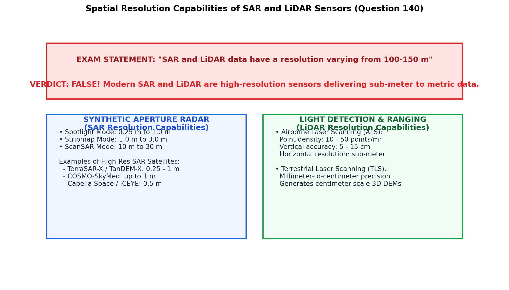
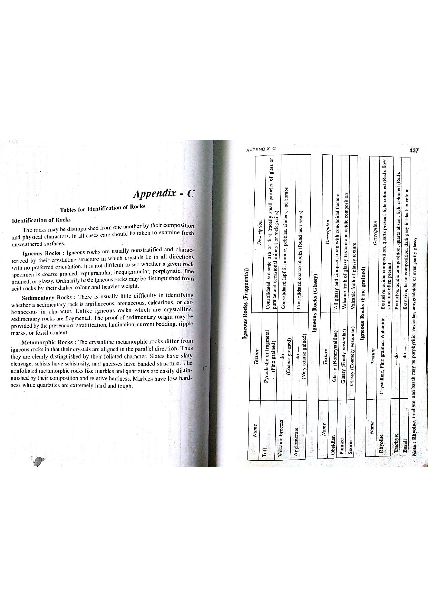

In modern remote sensing and geoinformatics, Synthetic Aperture Radar (SAR) and Light Detection and Ranging (LiDAR) represent the pinnacle of active high-resolution spatial imaging technologies (Lillesand et al., 2015; Sabins, 1997; Bangar, p. 225).
The assertion that "SAR and LiDAR data have a resolution varying from 100-150 m" is categorically and factually FALSE. Modern airborne and spaceborne SAR and LiDAR systems operate at sub-meter to decimeter spatial resolutions (e.g., $0.1\text{ to } 3.0\text{ meters}$), providing unprecedented detail for structural geology, fault creep monitoring, terrain elevation, and mining topography.

In conventional real-aperture radar (RAR), angular beamwidth is inversely proportional to physical antenna length ($\beta \approx \lambda / L_a$), requiring impractically massive antennas kilometers long to achieve fine resolution from space. Synthetic Aperture Radar (SAR) overcomes this physical barrier through signal processing:

LiDAR (Light Detection and Ranging) utilizes laser pulses in the near-infrared ($1064\text{ nm}$) or green ($532\text{ nm}$) wavelengths emitted at ultra-high repetition frequencies (up to $500\text{ to } 1000\text{ kHz}$):
| Sensor System | Type | Operating Band / Wavelength | Actual Operational Spatial Resolution | Typical Geological Application |
|---|---|---|---|---|
| TerraSAR-X / TanDEM-X | Spaceborne SAR | X-band ($\lambda = 3.1\text{ cm}$) | $0.24\text{ m}$ (Staring Spotlight) to $3.0\text{ m}$ (Stripmap) | Millimeter-scale tectonic fault slip, volcanic caldera deformation, mining subsidence. |
| COSMO-SkyMed | Spaceborne SAR | X-band ($\lambda = 3.1\text{ cm}$) | $1.0\text{ m}$ (Spotlight) to $3.0\text{ m}$ (HIMAGE) | Rapid disaster mapping, slope landslide monitoring, open-cast wall stability. |
| Sentinel-1 (ESA) | Spaceborne SAR | C-band ($\lambda = 5.6\text{ cm}$) | $5\text{ m} \times 20\text{ m}$ (IW Mode) to $5\text{ m} \times 5\text{ m}$ (SM) | Global tectonic strain mapping, aquifer compaction subsidence, coastal erosion. |
| ALOS-2 PALSAR-2 | Spaceborne SAR | L-band ($\lambda = 23.6\text{ cm}$) | $1.0\text{ m} \times 3.0\text{ m}$ (Spotlight) to $3.0\text{ m}$ (Ultra-Fine) | Penetration through dense forest canopies for geological mapping. |
| Airborne Airborne LiDAR | Airborne Laser | NIR ($\lambda = 1064\text{ nm}$) | $0.1\text{ m} \text{ to } 0.5\text{ m}$ (Point density $10 - 50\text{ pts/m}^2$) | Micro-topography, hidden fault scarp identification beneath dense vegetation. |
| Terrestrial LiDAR (TLS) | Ground Laser | NIR / Green | $1\text{ mm} \text{ to } 5\text{ mm}$ | Open-pit bench face discontinuity surveying, tunnel convergence monitoring. |
Affirming that SAR and LiDAR have resolutions of $100 - 150\text{ m}$ ignores over four decades of active sensor advancements. A resolution of $100 - 150\text{ m}$ is characteristic of very coarse passive optical scanners or historical spaceborne scatterometers. Both SAR and LiDAR were developed specifically to achieve high-resolution, all-weather, day-and-night imaging at the meter and sub-meter scale.
The statement is unequivocally False (Bangar, p. 225; Lillesand et al., Ch. 6):
Because the actual operational resolution is two to three orders of magnitude finer than $100 - 150\text{ m}$, the statement is False.
In a binary proposition, an assertion is either logically True or False. Options (C) and (D) are nonsensical grammatical distractors inserted into the examination paper to catch careless guessing.
| Sensor Technology | Energy Source | Typical Spatial Resolution | All-Weather / Day-Night Capability | Primary Terrain Surface Interaction |
|---|---|---|---|---|
| Synthetic Aperture Radar (SAR) | Active (Coherent microwave transmitter) | $0.25\text{ m} \text{ to } 10.0\text{ m}$ | Yes (Penetrates clouds, rain, fog, and darkness) | Surface roughness, dielectric constant, moisture content, geometry. |
| Airborne LiDAR | Active (Pulsed laser diode) | $0.1\text{ m} \text{ to } 1.0\text{ m}$ | Day and Night; cannot penetrate dense clouds/fog | Direct optical reflection; multi-return pulses penetrate tree canopy gaps to hit bare earth. |
| Optical Satellite (WorldView-3) | Passive (Reflected sunlight) | $0.31\text{ m}$ (Pan) / $1.24\text{ m}$ (MS) | Daylight only; completely blocked by clouds | Solar reflectance governed by electronic/vibrational mineral bonds. |
| Thermal Infrared (TIR) | Passive (Emitted terrestrial thermal radiation) | $60\text{ m} \text{ to } 100\text{ m}$ | Day and Night; blocked by clouds | Thermal inertia, kinetic surface temperature, silica quartz emissivity. |